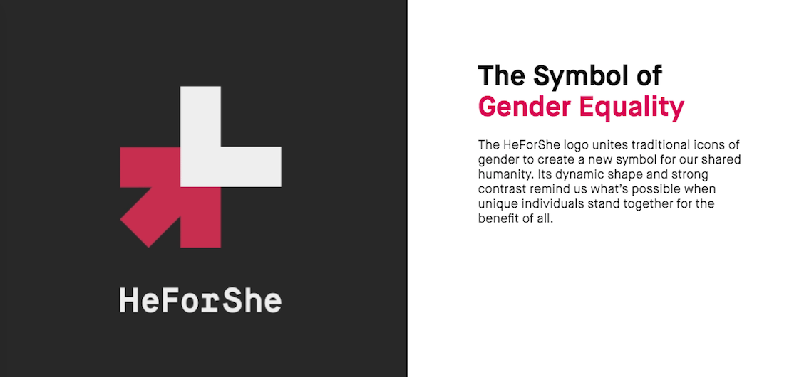
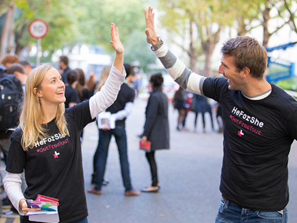
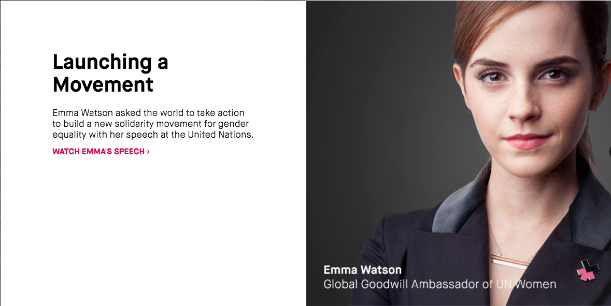
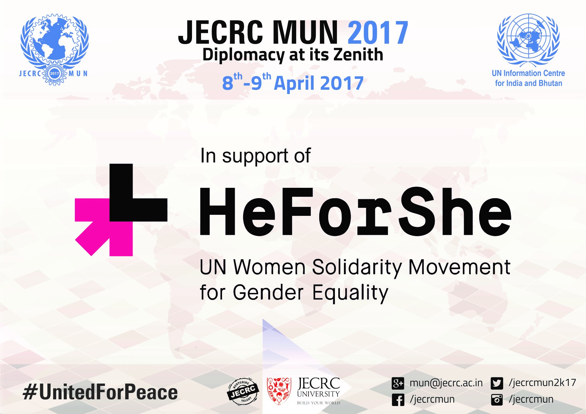

“We cannot succeed when half of us are held back.”
- Malala Yousafzai
The discriminatory attitude of the society towards women not only violates human rights, but also suppresses opportunities which leads to differences in the status and power between the two genders.
Females around the world live within the confines of rigid gender norms, which frequently results in disproportionate access to basic services and major violations of rights.
In order to make the world free from discrimination, focus has to be laid upon eradicating the gender stereotypes and prejudiced perspective of society, as “equality is a standard, not an ambition”.
What does HeForShe do?

HeForShe is a unanimity campaign for the advancement of women initiated by
UN Women.
It’s goal is to engage men and boys as agents of change by encouraging them to take action against inequalities faced by women and girls across the globe.
It targets on removing the social and cultural barriers that prevents them from leading a life of equal access to opportunities.
Launched on 20th September 2014, at the United Nations by then Secretary-General Ban Ki-moon and UN Women Global Goodwill Ambassador,EmmaWatson, in just three days, 1,00,000 men committed themselves towards HeForShe.
What HeForShe strives to achieve?
The fundamental objective of HeForShe is to change discriminatory behaviour, through building awareness of the importance of gender equality and women’s empowerment.
HeForShe uses innovative online, offline, and mobile phone technology to identify and activate men in every city, community, and village around the world.
The HeForShe journey began online, with a simple affirmation that gender equality is not only a woman's right, but a human rights issue that requires participation and
commitment of men.
It then moves beyond awareness to action, asking men to define what matters to them, and what they can do to make a difference. Hundreds of thousands of men have made this commitment, and are now taking major steps to change the world, sharing their stories to inspire others to follow suit.
Their individual actions will collectively create the sustainable, social and systemic change needed to achieve equality.
Why is HeForShe important?
The achievement of gender equality requires an inclusive approach, one that invites men and boys to build on the work of women’s movement as equal partners, in order to benefit all of humanity.
Research estimates suggest that, on the current trajectory, gender equality would not be achieved until 2095.
But,with men and boys at the table and engaged actively, a ‘gender equality’ can be achieved much sooner
What has HeForShe achieved so far?

Till date, the online pledges have exceeded 2,00,000, and the offline activities have engaged many hundreds of thousands more.
Over the past months, HeForShe has been the subject of more than 1.2 billion conversations on social media, reaching all parts of the globe.
It has encouraged women and girls to be leaders in inviting and welcoming men and boys into this solidarity campaign to achieve ‘new balance’
The UN Goodwill ambassadors include,
Ms. Nicole Kidman,
Ms. Emma Watson,
Ms. Anne Hathaway who are accomplished actors and are enthusiastic about dedicating their efforts to raise awareness on the issue of inequality so as to empower women.
Renowned actor-filmmaker-singer Farhan Akhtar was announced as South Asia’s Goodwill Ambassador.
Farhan Akhtar is the first man to be chosen as a Goodwill Ambassador in the organization’s history.
Other established personalities like Ms. Sania Mirza (South Asia) , Ms. Camila Pitanga (Brazil), Ms. Muniba Mazari (Pakistan) are also working on behalf of the United Nations by highlighting the key issues and drawing attention to its activities
HeForShe Impact 10x10x10
IMPACT 10X10X10 is an initiative that convenes 10 Heads of State, 10 global CEOs and 10 University Presidents to fast-track gender equality in boardrooms, classrooms and world capitals.
It aims to engage governments, corporations and universities as instruments of change.
The IMPACT 10x10x10 Champions will assume their role by committing to agreed standards on gender equality and women’s empowerment and will launch HeForShe mobilization activities within their countries, corporations and schools by making a commitment to internal change or to the creation of programmes that empower women employees or customers, or to encourage male employees and customers towards better understanding of what gender equality means and what their role is, in achieving it.
HeForShe and JECRC MUN 2017

HeForShe has proved to be a really influential movement.
We saw men not only signing up for the movement, but also coming up with innovative solutions for actual implementation.
We believe that the real struggle is not to start with awareness but how to get to the finish line.
To achieve something successfully, introspection of behavior and communication is necessary. Enabling individuals to work together to achieve a defined and common purpose brings groups together to offer different perspectives and expertise to solve for common problems.
By facilitating the exchange of knowledge, JECRC MUN family wants to provide a platform to the ideas and opinions to contribute in achieving ‘Gender Equality’ that’s a necessity and not a choice.